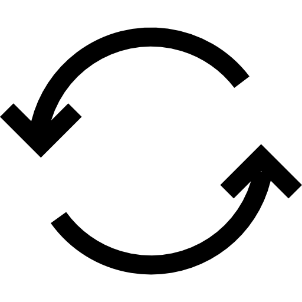
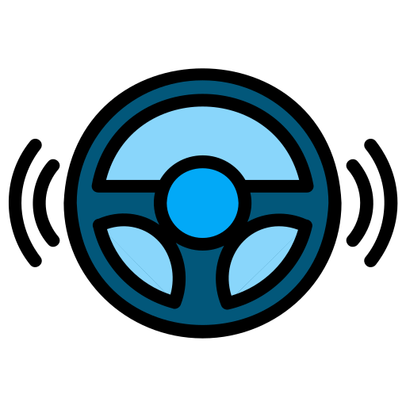

Accueil
Je m’appelle Gabriel WANYA, je suis âgé de 23 ans. Je suis actuellement étudiant de BTS SIO dans le cfa ingetis, en premiere année de BTS « SIO spécialité SISR » Services Informatiques aux Organisations spécialité en Solutions d'Infrastructure, Systèmes et Réseaux. Depuis mes jeunes années, j’ai toujours été attiré par l’informatique et les nouvelles technologies. C’est tout naturellement que je me suis tourné vers ces études, en effectuant mes trois années d’études en BAC PRO « Système Electronique et Numérique », et mes deux années d’études en BTS Services Informatiques aux Organisations spécialité en Solutions d'Infrastructure, Systèmes et Réseaux.
J’ai eu l'opportunité d’effectuer des stages en milieu professionnel, dans différentes entreprises, disposant d’un service informatique. Les études que j’ai entreprises répondent, à une passion et à un réel intérêt pour l'innovation informatique et technologique.
Mon projet professionnel aujourd’hui est de devenir « Responsable en Ingénierie Systèmes et Réseaux ». A partir du 24 septembre, j’intègre l’école supérieure des métiers CESI du Mans pour suivre durant 2 ans, une formation diplômante bac+4 afin de devenir « Responsable en Ingénierie Systèmes et Réseaux ». Je souhaite par le biais de l’apprentissage en l’alternance participer à la construction et au développement de l’entreprise, en grandissant avec elle, en apportant mes compétences, ma motivation et en partageant ma passion de la haute technologie. En participant à la mise en œuvre et l’exploitation des réseaux informatiques, téléphonique. En contribuant au bon fonctionnement des réseaux et en intervenant sur les incidents en les dépannant. En participant à la gestion et à l'administration des réseaux.
Réactif
La réactivité permet une résolution rapide des problèmes
Pérséverant
La réactivité permet une résolution rapide des problèmes
Autonome
La réactivité permet une résolution rapide des problèmes
systeme d'exploitation
Programmation
Scripting
Supervision
Réseau
Virtualisation
Base de données
Services